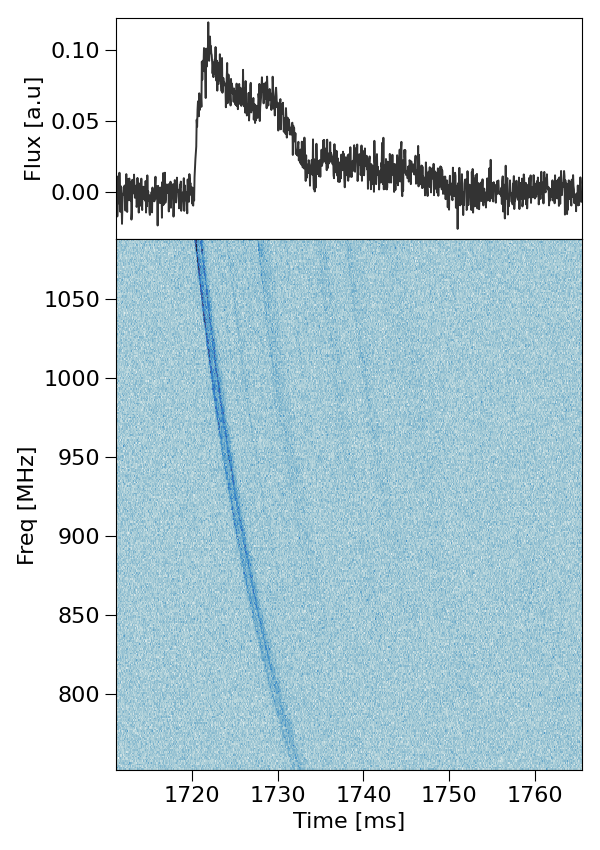
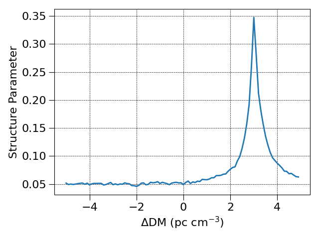
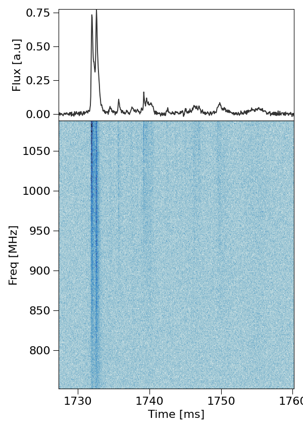

Dedisperse FRB data using ILEX and shrine
The following is a guide to correcting the dispersion in an FRB using SHRINE. In this example we have X and Y voltage data for
the FRB 20230708A [Dial et al, 2025] that are slightly under-despersed with a DM of 408.51. Hence, we will use SHRINE to find the structure maximised DM and apply
this coherently.
Start by creating a config file for the FRB:
python3 -m make_config 230708.yaml
Set the nessesary parameters in the config file, 230708A has a central frequency of 919.5 MHz with a bandwidth of 336 MHz. :
data: # file paths for Stokes I, Q, U and V dynspec .npy files
dsI: ./230708_I.npy
par:
cfreq: 919.5
name: frb230708
bw: 336
If needed, create the stokes I dynamic spectrum:
python3 -m make_dynspec -x 230708_X.yaml -y 230708_Y.yaml --bline --ofile "230708"
Loading this config file in python and plotting the data provides the following:
from ilex.frb import FRB
frb = FRB("230708.yaml")
frb.plot_data(tN = 50)
{kind=link}

The above image show the Stokes I dynamic spectrum and time-series at a resolution of 1 MHz and 0.05 ms. We can clearly see a frequency sweep meaning there is residual dispersion remaining in the FRB.
What we can do is search for the delta DM nessesary to correct for this using the incoherent_dedisperse.py script and the --method=SMDM option. To improve
the speed of the algorithm as well as the robustness we will crop the data. From the figure above a good crop is between 1700 and 1780 ms, this holds all the
FRB information and some of the baseline signal on either side. Also set the time resolution to something reasonable.
frb.set(t_crop = [1700, 1780], tN = 40)
frb.save_data(save_yaml = True)
Saving the data this way will not create new data products, instead every time data is loaded from this config file only the crop will be processed.
Now run the dispersion search algorithm:
python3 -m incoherent_dedisperse --parfile 230708.yaml --DMmin -5.0 --DMmax 5.0 --DMstep 0.1 --method SMDM
This command will produce the following output:
Results for Structure maximising DM:
----------------------------------------
begin maximise_structure summary
FRB Label: SMDM
Time Resolution: 40.0us
kc: 363
Forced kc: False
Structure Maximising Delta DM: 2.9999999999999716
Uncertainty in Structure Maximising Delta DM: 0.0/+0.1999999999999993
Looking in the creating ./SMDM directory you fill find a figure labelled *_strcture_parameter.png which will look something like the following:
{kind=link}

Note, changing the min and max DM bounds for the DM search and centering the peak in the above plot will help better estimate the uncertainty in the
DM. Applying a delta DM of 3.0 gives a final DM of 411.51 which is the correct DM [Dial et al, 2025].
Finally, there are a number of options to actually apply the delta DM. You could simply add the --oparfile and -o options when calling incoherent_dedisperse.py
to save dedispersed copies of the input data, this will also create a new config file that streamlines loading that data into ILEX.
OR, you can coherently dedisperse the original voltage data, lets do this! Run the coherent_dedisperse.py script:
python3 -m coherent_dedisperse -x 230708_X.npy -y 230708_Y.npy -o 230708_de --DM 3.0 --cfreq 919.5 --bw 336 --f0 751.5
Now create Stokes I dynamic spectra and a new config file with the new dedispersed data products. The following is your final de-dispersed FRB:
{kind=link}

Now you are all done!